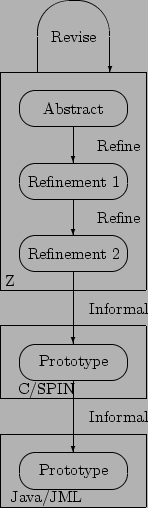
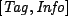
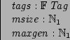
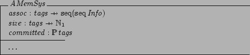
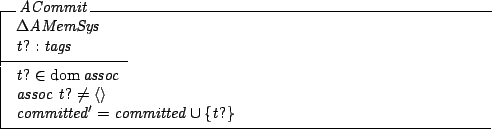
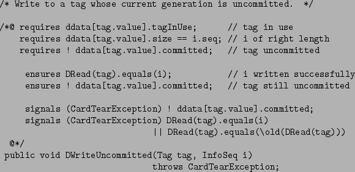
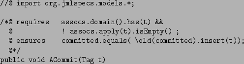
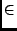

|
CARDIS '02 Paper
[CARDIS '02 Tech Program Index]
| Pp. 75-86 of the Proceedings |  |
A Java Reference Model of Transacted Memory for Smart Cards
Erik Poll
University of Nijmegen, the Netherlands
Pieter Hartel
University of Twente, the Netherlands
Eduard de Jong
Sun Microsystems, Inc., Santa Clara, USA
Transacted Memory offers persistence, undoability and auditing. We present a
Java/JML Reference Model of the Transacted Memory system on the basis of our
earlier separate Z model and C implementation. We conclude that Java/JML
combines the advantages of a high level specification in the JML part (based
on our Z model), with a detailed implementation in the Java part (based on
our C implementation).
In a previous paper [6] we introduced Transacted Memory as an
efficient means to implement atomic updates of arbitrarily sized information
on smart cards. Smart cards need such a facility, as a transaction can
be aborted by a card tear, i.e. by pulling the smart card
out of the Card Acceptance Device (CAD), at any moment.
A patent application has been filed for this Transacted Memory
[5].
Its design allows a much smaller implementation overhead than the
transaction mechanism in the current Java Card API1, which does not
even provide generational, logging, or multiple concurrent
transactions.
In our earlier paper we provided a succinct abstract Z
specification [13] of the system, a first Z refinement that takes
into account the peculiarities of EEPROM memory (i.e. byte read versus block
write), a second Z refinement that deals with card tear, and, finally, an
(inefficient) C implementation. (The inefficiency is due to the use of many
simple for-loops that search the memory; we are working on a VHDL
specification of a hardware module that will replace the for-loops by
efficient parallel searches but this is beyond the scope of the present
paper.) The C implementation has been coded in such a way that it also serves
as a SPIN [8] model.
From our earlier work we concluded that a formal connection between
specification and implementation would have been highly desirable, yet such a
connection cannot be obtained using Z and C. While a formal connection can be
established using SPIN, we believe the readability leaves much to be desired,
as specification and implementation tend to be intertwined in a SPIN model.
In the present paper we adopt an integrated approach to specification and
implementation that solves the problems of readability and the lack of a formal
connection between specification and implementation.
We use the Java/JML [9] modelling method and tools,
which means we write formal specifications by annotating the Java
code with invariants, preconditions, and postconditions, using the
specification language JML (see www.jmlspecs.org).
These formal specifications can then be compiled into runtime-checks
[4], providing a convenient way of checking
specifications against code. The Java/JML modelling method and the
runtime assertion checker ensure a strong, formal connection between Java
implementation and JML specification.
In the present work we apply Java/JML to what we hope will become a component
of a future version of the Java Card technology.
JML has already been used to specify the entire Java Card
API [11,12], and other tools than the runtime
assertion checker have already been used to verify JML specifications of
Java Card applets [3,1].
The contributions of the present paper are:
- Several bugs have been detected and repaired in the
implementation of the Transacted Memory.
- We make the pre- and postconditions of the memory operations
explicit in the JML specifications. The readability of these specifications
is better because the reader does not have to trawl through the entire Z
specification to discover the pre- and postconditions. The connection
between specification and implementation is formal, and has been checked
using the runtime assertion checker.
- The previous C implementation cum SPIN model relied on implicit
methods of modelling the recovery from card tears. In the Java/JML model we
use exception handling as an explicit, clearer method for modelling recovery.
This allows us to test the behaviour of the Java implementation
in the presence of (simulated) card tears, and to use JML to precisely
specify the conditions that should hold after a card tear.
- We contribute a reference model of the Transacted Memory
system to SUN's collection, instead of just a reference
implementation. The difference is in the presence of the formal JML
specification.
In Section 2 we review briefly how Transacted Memory
works. Section 3 describes the Java implementation of
the system,
Section 4 discusses the JML specification
for this Java implementation. The last section concludes.
Figure 1:
The process
|  |
2 The Transacted Memory
Figure 1 describes the relationship between the various
specifications and implementations of the Transacted Memory system. The
Java/JML reference model, which is the subject of this paper, was derived by
hand from the closely corresponding C implementation cum SPIN model for the
Java part, and from the final refinement of the Z specification for the JML
part. While Java and C are similar in many ways, there are some important
differences, discussed in Section 3 below. Here we
concentrate on how Transacted Memory works, giving excerpts of the abstract Z
specification to make the present paper self contained; the details are in
[6,2].
Transacted Memory is designed around two notions: tags and
information sequences. A Tag is merely a unique
address, i.e. an identifier of a particular information sequence.
An information sequence is a sequence of Info's,
where Info is the unit of data stored and retrieved.
A sequence of Info's would be used to store a collection of
object instances that are logically part
of a transaction.
The abstract Z specification (below) makes no specific assumptions about either
component:

The existence of a finite set of available tags is assumed (tags),
as well as limits on the size of the memory (msize).
There may be several generations of the information associated with a tag,
and there is a maximum number of generations that may be associated with any
tag (maxgen):

The abstract Z specification represents the memory system as two partial
functions assoc and size and a set committed,
as shown below. We have omitted the constraints on the partial functions and
the set:

The assoc function associates a tag with a sequence of sequences of
information.
The first sequence of information represents the current information
associated with a tag.
Any further information sequences give older generations of this information,
in order of increasing age.
The size function gives the length of the information
sequences associated with a tag. The committed set records those
tags for which the current state of the transacted data has been committed.
Operations are provided to write a new generation, and to read the current or
older generations. All generations associated with a tag have the same size,
although this could be generalised.
The transaction processing capability of the memory is supported by a commit
operation, which makes the most recently written information the current
generation. The oldest generation is automatically purged should the number of
generations for a tag exceed a preset maximum.
It should be noted that the support for recording multiple
generations, which can be useful for logging, essentially comes for free,
i.e. without any additional implementation cost.
As an example,
the abstract Z specification of the operation ACommit is shown
below. The operation commits the current generation of information associated
with a tag. The tag must have an associated information sequence, which is
flagged as committed.

The Transacted Memory must be used in such a way that a sequence of
operations either completes normally, or that a sequence is interrupted at an
arbitrary moment by a card tear. A recovery operation Tidy is
provided to return the Transacted memory to a known state. The idea is that
each time the card is inserted in the CAD, the recovery operation is
automatically started.
Transacted Memory thus provides undoability (by being able to revert to a previous generation) and persistence (by using EEPROM technology). These are precisely the ingredients necessary to support transactions [10].
To provide this functionality, Transacted Memory maintains a certain amount of bookkeeping information. In its most abstract form, the bookkeeping information records three items:
- The length of the information sequence that is associated with a tag.
- The different generations of information associated with each tag. It is possible that there is no information associated with a tag.
- Which tags are currently committed.
Table 1:
Transacted Memory data structures and functions for C.
| typedef struct { Gen old, new ; byte cnt ; } GenGenbyte ; |
| |
structure used to hold the number of the oldest and newest generation,
and the number of generations. |
| typedef struct { Size size ; Info data[ssize] ; } InfoSeq ; |
| |
structure used to hold an information sequence and its size. |
| GenGenbyte DGeneration( Tag ) ; |
| |
Return all available information for the given tag. The result is undefined if the tag is not in use. |
| Tag DNewTag( Size ) ; |
| |
Return an unused tag of the specified size. The result is undefined if no tag is available. |
| void DTidy( ) ; |
| |
Recover from an interrupted write operation. |
| InfoSeq DReadGeneration( Tag, Gen ) ; |
| |
Read the information sequence of a given tag and generation. The information sequence is undefined if the tag is not in use. |
| InfoSeq DRead( Tag ) ; |
| |
Read the information sequence of the current generation associated with the given tag. |
| void DCommit( Tag ) ; |
| |
Commit the current generation for the given tag. The operation has no effect if the tag is already committed. |
| void DRelease( Tag ) ; |
| |
Release all information associated with the given tag. The operation has no effect if the tag is not in use. |
| void DWriteFirst( Tag, InfoSeq ) ; |
| |
Write to a tag immediately after the DNewTag operation. The result is undefined if insufficient space is available. |
| void DWriteUncommitted( Tag, InfoSeq ) ; |
| |
Write to a tag whose current generation is uncommitted. |
| void DWriteCommittedAddGen( Tag, InfoSeq ) ; |
| |
Write to a tag whose current generation has been committed, and whose maximum number of generations has not been reached. |
| void DWriteCommittedMaxGen( Tag, InfoSeq ) ; |
| |
Write to a tag whose current generation has been committed, and whose maximum number of generations has been written. The oldest generation will be dropped. |
|
The details of the Z specification may be found in a technical
report [2]; here we focus on the API of the Transacted Memory,
taken from our previous paper [6] and shown in
Figure 2, because this is where the pre- and postconditions of
the Java/JML specification provide the major contribution to readability and
rigour.
3 A Java implementation of Transacted Memory
The Java implementation was obtained by manually transliterating the C code
to Java code. This is not difficult as the languages are close, and for a
program of this size (1200 lines) the effort involved is small. We have been
careful in transliterating the C code, and we are confident that our Java
implementation closely mimics the C implementation. There are two essential
differences between the Java implementation and the C implementation, as
explained below.
The C implementation contains several macros to define ``types'' for the
different kinds of numeric values (bytes) that are used, such as generations,
locations, page numbers, tags, versions, etc.:
#define Gen byte /* 0 .. maxgen */
#define Loc byte /* 0 .. msize-1 */
#define PageNo byte
#define Tag byte /* 0 .. tsize-1 */
#define Ver byte /* 0 .. 2 */
#define Inf byte /* 0 .. isize-1 */
#define Seq byte /* 0 .. ssize */
These are just macros, and although they increase the readability of the
code, they do not provide any type-safety.
In the Java implementation we have chosen to use different classes for these
different kinds of values. This is inefficient since we make what is just a
simple byte into an object. The inefficiency is not a primary concern here;
we believe it to be more important for a reference model to be as clear and
concise as possible2. Modelling bytes by classes has the advantage of
providing type-safety, as for instance `generations' and `tags' are no longer
assignment-compatible. Interestingly, this increased type safety immediately
revealed a bug in the C code (and SPIN model): in one place a `version
number' was used in a place where a `page number' was expected. This bug
seems to have been a simple typo in the C code.
This bug was not discovered in the model checking using SPIN, nor in
testing of the C implementation, because the test harness for the
Transacted Memory used there was fairly restricted.
The discovery of this bug illustrates the value of a statically enforced type system. Especially for code like that of the Transacted Memory, which is littered with different `kinds' of bytes, it is easy to confuse a byte representing a page number with a byte representing a `version'. It is a pity that C and Java do not have type-safe enumeration types, and that JML does not improve the level of expressiveness of the Java/JML combination in this respect.
The second, and more important, aspect in which the Java implementation
essentially differs from the C implementation is that we use Java's
exception mechanism to model card tears. We introduce a special
exception class CardTearException, and a card tear is simulated
by throwing this exception.
This is useful, because it allows us
- to test the behaviour of the program when card tears occur;
in the Java method that models atomic writes to EEPROM
we can easily simulate random card tears by randomly choosing
to throw a CardTearException or not, before or after the
atomic write to EEPROM.
- to specify in JML the properties that should hold after
a card tear occurs;
this will be discussed in Section 4.
In fact, though we will not pursue this point in this paper,
a card tear can be modelled very accurately as an (uncatchable) Java exception,
for which the power-on mechanism of the card provides the exception handler;
see [7].
In a later stage we will also introduce Java exceptions to signal
that there is insufficient free transacted memory to carry out an operation,
as discussed at the end of Section 4.
4 JML specifications for the Java implementation
The Java Modeling Language (JML) [9] is a behavioural
interface specification language tailored to Java.
JML is developed primarily by Gary T. Leavens at Iowa State University.
Java programs can be specified using JML by
annotating them with invariants, pre- and postconditions, and other kinds of
assertions. JML combines features of Eiffel (or `Design by Contract') and
model-based approaches, such as Larch/LSL and VDM.
JML annotations are written as a special kind of Java comments.
This means they are ignored by normal Java compilers,
but can be used by special tools for JML.
The tools we have used on our JML-annotated code are the JML type-checker
and the JML runtime assertion compiler [4].
Both these tools can be downloaded from www.jmlspecs.org.
The runtime assertion compiler turns annotations into runtime checks,
so that any violation of an annotation at runtime produces
an error.
To create the JML specifications for the Java implementation,
elements of the Z specifications and of the informal comments given
in the C code were converted into pre- and postconditions,
class invariants, and loop invariants.
The JML specifications we have written are partial in the sense that they do
not give a complete specification of Transacted Memory.
Still, the specifications do express the main properties that should hold
for the Transacted Memory, and have proven to be sufficiently detailed to
find bugs, as we will discuss later.
Figure 2 gives an example of a JML specification,
namely the specification of the method DWriteUncommitted.
The JML specification is written between the annotation markers
/*@ and @*/.
Figure 2:
JML specification of DWriteUncommitted
|  |
The first three lines of the JML specification, starting with
requires, give the precondition of the method.
Here the precondition is that the tag should
be in use, the information sequence i should be of the right length, and the
tag should not be committed. When doing runtime assertion checking,
any invocation of DWriteUncommitted which violates these preconditions
will produce an error message3.
The next two lines, starting with ensures, give the postcondition of the method.
The first of these lines says that if we read back the value
for tag using DRead we get the value i we just assigned to
it, the second says that the tag is still not committed. When doing
runtime assertion checking, any invocation of DWriteUncommitted which
does not establish these postconditions will produce an error message.
Finally, the last lines of the JML specification,
starting with signals,
give the exceptional postcondition. Whereas ensures
clauses specify the `normal' postconditions, i.e. properties that should hold after normal termination of a method invocation,
signals clauses specify properties that should hold at the end of
a method invocation if an exception is thrown.
The first signals clause here says that if a
CardTearException
is thrown then the tag remains uncommitted.
The second signals
clause says that if a CardTearException is thrown, then
either
DRead(tag).equals(i)
or
DRead(tag).equals(\old( DRead(tag)))
i.e. reading back the value for tag either produces the `new' value
i just written or it produces the `old' value of DRead(tag).
The JML keyword \old is used here
to refer to the value an expression had before execution of the method.
Note that the information sequence
i may consist of several bytes, and that
a single DWriteUncommitted
operation may require several writes to EEPROM. EEPROM is typically written
block by block, where the block size depends on the particular EEPROM. So
the second signals clause states the atomicity of the
DWriteUncommitted operation!
When doing runtime assertion checking, any invocation of
DWriteUncommitted which throws a CardTearException
and which does not
establish the exceptional postconditions will produce an error message.
Throwing an exception that is not a CardTearException
will also produce an error message, as there are no signals
clauses allowing other exceptions to be thrown.
Everything the runtime assertion checker does could be programmed by hand, as
tests in the code - the C implementation has a number of these tests
scattered through the code -, but note that for something like the second
signals clause above this is far from trivial! It would involve
catching and re-throwing exceptions at the end of the method, as well as
somehow recording the `old' value that DRead(tag) has in the
pre-state. The JML runtime assertion tool compiles all this into the code
automatically, which is useful, as it means we can concentrate on the essentials.
The other three write-operations
- DWriteFirst, DWriteCommittedAddGen, and
DWriteCommittedMaxGen -
have specifications very similar to the one discussed above.
The only difference is in their preconditions.
The specification of DWriteUncommitted above is still
incomplete. For example, it does not specify that the older
generations of the tag are left unchanged. Still, specifications
like this turn out to be detailed enough to give useful feedback when
checking them at runtime. As discussed below, several problems with the
implementation came to light when performing runtime assertion checks.
Performing tests of the Transacted Memory the runtime assertion checker
immediately reported that DWriteCommittedAddGen and
DWriteCommittedMaxGen do not establish their postconditions; more
specifically, they fail to establish
ensures !ddata[tag.value].committed;
The implementations of these methods forget to reset the committed flag of
the tag. This bug was not discovered using SPIN, because the test harness
used there committed every new generation immediately after the write operation.
Note that even in the Java/JML model we could have forgotten this
postcondition, and then we would not have discovered the problem either.
However, by systematically writing specifications for all the operations
we believe one is less likely to forget something like this.
After Bug 1 was repaired, a second bug was discovered by runtime
assertion checking.
We also repaired the SPIN model and re-ran the model checker on that,
and found the same error there.
The operations DWriteCommittedAddGen
and DWriteCommittedMaxGen start a new,
uncommitted, generation,
but a card tear at a certain point in their execution
may inadvertently commit the new generation written.
Both DWriteCommittedAddGen
and DWriteCommittedMaxGen first write
the data for the new generation.
This may take several atomic writes, but the last of these
implicitly records that the whole write has been successful
(in effect, making the whole writing of the data atomic).
Then the commit flag is cleared - also atomically, but separate from
the last write for the data. If a card tear
occurs immediately after the data is written, but before the commit flag is
cleared, the tag will appear committed
to the recovery process, whereas in reality it should be uncommitted.
The recovery process was not designed to
detect this, and indeed a warning to this effect appears in the original Z
specification [2, page 34].
The solution which we have implemented is to use not a boolean commit
flag, but a three-valued flag, so that a
DWriteCommittedAddGen or DWriteCommittedMaxGen
interrupted at the precise point above can be detected during recovery.
(An alternative solution would be to store the last of the data and the commit
flag together in the same EEPROM block, as opposed to storing them in
separate areas, so that writing the last of the data and the clearing
the commit flag becomes one atomic operation.)
In addition to finding the bugs above,
the systematic analysis of the code required to write the JML specifications
also had the benefit of suggesting several optimisations and improvements
to the code.
The method DGeneration(Tag tag) discovers the generation indices
associated with a tag, and then returns the indices of the oldest and newest
generation, as well as the number of generations. To better understand the
implementation of this method, it was annotated with JML assert
clauses. An assert clause can occur anywhere in a method body, and
specifies a property that should hold at this point in the program. When doing
runtime assertion checking, any violation of an assert clause will
produce an error message.
Annotating the implementation of DGeneration(Tag tag)
with assert clauses,
we discovered that one for-loop could be removed,
as the value it computed could already be computed directly
from values already known.
Also, a redundant modulo operation %
(i.e. one where the first argument will always be smaller than the modulus)
was discovered in the implementation of DGeneration.
The four operations for writing to the Transacted Memory are:
- DWriteFirst
- DWriteUncommitted
- DWriteCommittedAddGen
- DWriteCommittedMaxGen
These operations have identical postconditions, and only differ in their
preconditions. This raises the question whether it is not better to have a
single method DWrite, which chooses the `right' write operation and
executes it. Indeed the original Z specification offers such a `comprehensive'
write operation, defined by way of a schema conjunction of the write
operations listed above.
However, this operation was forgotten in the development of the C cum
SPIN code.
An unsatisfactory feature of the Transacted Memory
as originally implemented in C is that
if there is insufficient space to perform a write operation,
it may be carried out only partially, resulting in an inconsistent state,
without any warning.
The informal specification of DWriteFirst in Table 2
does indeed say that its effect is undefined if insufficient space is
available.
The same can happen in the other write operations,
although their informal specifications do not say this.
Our initial JML specifications for the write methods,
e.g. the one in Figure 2, did not allow for this,
and the runtime assertion checker warned about violations of them.
We improved the Java implementation so that a
OutOfTransactedMemoryException
is thrown in case insufficient space is available to perform a write
operation. The JML specifications were adapted accordingly.
For example, in the specification for DWriteUncommitted
in Figure 2 we added
signals
(OutOfTransactedMemoryException)
DRead(tag).equals(is) &&
! ddata[tag.value].committed;
stating that the write operation won't happen at all in case
an OutOfTransactedMemoryException is thrown.
Similarly, the operation DNewTag was adapted to throw
an OutOfTagsException when no additional tag is available,
rather than producing an undefined result in this case.
4.1 Future Work with these JML specs
Figure 3:
JML specification of ACommit
|  |
We also translated the abstract Z specification given in [6] to Java/JML.
This was not difficult, given that JML comes with a package
org.jmlspecs.models that provides Java implementations of all the standard
mathematical concepts used in the Z specification.
For example, Figure 3 gives the JML translation of
the Z specification of the operation ACommit shown in
Section 2.
One obvious difference is that the Z specification looks prettier, as in
Java/JML we do not have conventional mathematical notation, such as  or
 . .
A more important difference is that the JML/Java specification can be turned
into an executable one, namely
public void ACommit(Tag t)
{ committed = committed.insert(t);
}
We could use this Java implementation of the abstract specification
to give a more detailed specification for our current Java implementation.
Basically, the idea would be to define a Java implementation which executes
the current Java implementation and this more abstract one side by side, and
express the relation between the two in JML assertions.
However, as the abstract specification does not consider the possibility
of card tears, the precise relation between this abstract implementation
and the current Java implementation is not trivial to make precise.
This is left as future work.
The work described in this paper,
i.e.
- developing a Java implementation based on a C implementation, and
- developing JML specifications based on a Z specification, and
- checking the Java implementation against the JML specification using
runtime assertion checking,
has been successful in finding bugs and improving the implementation.
The bugs we found range from simple
typos to more serious errors, and to some misunderstandings between
different people that have been
involved in the design of the Transacted Memory.
It is disappointing that the careful development of the system as reported in
our previous paper [6] - starting from a formal abstract Z
specification that was refined to an C/SPIN implementation, which was
model-checked - did leave these bugs in the final implementation.
In all fairness, we must admit that the original testing scenario for the
C/SPIN implementation with the model-checker SPIN was too restricted.
Conventional testing of the C implementation would have discovered
many of the bugs that we found, but probably with more effort.
Runtime assertion checking of JML specifications makes it easier to locate
bugs than conventional testing.
Indeed, no complicated testing scenarios were needed to find any
of the bugs discussed.
Some problems and possible improvements
were found before we even tried runtime assertion checking,
but were spotted when trying to come up with good specifications
in the first place. Annotating Java code with JML specifications provides a
systematic way of performing a thorough code review, which can help to
discover bugs and may point to possible optimisations or improvements.
By contrast, testing of the code may find the bugs, but will probably
not suggest optimisations or improvements.
There is a fairly standard recipe for annotating Java code with JML.
Typically, one starts by giving pre- and postconditions for each method;
these can be based on existing informal specifications,
on our informal understanding of the program,
and - somewhat exceptionally here - on the formal Z specifications.
For each method implementation one then informally checks that any
method invocations it contains do not violate their preconditions;
this may require further strengthening of its precondition, or the
introduction of loop invariants.
Then one compares the different pre- and postconditions that have been written.
Commonalities between pre- and postconditions may suggest class invariants.
Differences between them may point out possible omissions;
e.g if the precondition of DWriteUncommitted (Tag tag)
requires a tag to be uncommitted, then its postcondition
should probably state whether this tag remains uncommitted or not,
and possibly other methods that have a tag as argument should be
specified with similar conditions.
Finally, any violations of assertions found during runtime assertion checking
in test scenarios may of course lead to improvements in the JML specifications.
For the system we considered, a vital advantage of using Java over using C
is that we can conveniently model card tears using Java's
exception mechanism.
A disadvantage of using Java instead of C is that C is probably
closer to a realistic implementation in actual hardware.
Using Java and JML, rather than C and Z, for implementation and
specification, has had several advantages.
Firstly, it becomes possible to check the relation between
implementation and specification: runtime assertion checking tells us where
Java implementation and JML specification disagree.
This may of course just
as well be a mistake in the Java implementation as a mistake in the JML
specification.
Secondly, Java implementation and JML specification are close together,
in the same file. The usefulness of this is illustrated by the fact that
the Z specification actually discusses the possibility of bug 2, but in a
footnote on page 34 of [2], something one is not likely
to notice or remember when working on the C implementation.
Finally,
the JML specifications are a lot easier to understand than the Z
specifications, except for experts in Z. JML mainly uses Java
notions and notations, and it has been the overriding design principle
in the design of JML that specifications should be easy to understand by
any Java programmer.
Indeed, a point we would like to stress is that formal methods need not involve
notations and tools that only specialists can use.
Our formal model is a Java program, that can be understood by anyone
familiar with Java, as can the formal specifications for it written in JML.
In this respect, it is interesting to note the contrast with Z and SPIN -
or indeed UML!
Developing the kind of JML specifications we discussed in this paper and
using the runtime assertion checker should not pose any problem for
competent Java programmers.
The work by Erik Poll is financially supported by the IST Programme of
the European Union, as part of ``VerifiCard'' project (IST-2000-26328).
- 1
-
C.-B. Breunesse, B. Jacobs, and J. van den Berg.
Specifying and verifying a decimal representation in Java for smart
cards.
In 9th Algebraic Methodology and Software Technology (AMAST),
volume LNCS 2422, pages 304-318, St. Gilles les Bains, Reunion Island,
France, Sep 2002. Springer-Verlag, Berlin.
- 2
-
M. J. Butler, P. H. Hartel, E. K. de Jong, and M. Longley.
Applying formal methods to the design of smart card software.
Declarative Systems & Software Engineering Technical Reports
DSSE-TR-97-8, Univ. of Southampton, 1997.
http://www.dsse.ecs.soton.ac.uk/techreports/
97-8.html.
- 3
-
N. Cataño and M. Huisman.
Formal specification of Gemplus's electronic purse case study.
In L. H. Eriksson and P. A. Lindsay, editors, Formal Methods:
getting IT right - Formal Methods Europe (FME), volume LNCS 2391, pages
272 - 289, Copenhagen, Denmark, Jul 2002. Springer-Verlag, Berlin.
- 4
-
Y. Cheon and G.T. Leavens.
A runtime assertion checker for the Java Modeling Language (JML).
In Hamid R. Arabnia and Youngsong Mun, editors, Proceedings of
the International Conference on Software Engineering Research and Practice
(SERP '02), Las Vegas, Nevada, USA, June 24-27, 2002, pages 322-328. CSREA
Press, June 2002.
- 5
-
Eduard Karel de Jong and Jurjen Norbert Bos.
Arrangements Storing Different Versions of a Set of Data in
Separate Memory
Areas and Method for Updating a Set of data in a Memory.
Dutch Patent Application, PCT/NL99/00360, June 10, 1999.
International Publication Number WO 00/77640, 2000. WIPO, Vienna.
- 6
-
P. H. Hartel, M. J. Butler, E. K. de Jong Frz, and M. Longley.
Transacted memory for smart cards.
In J. N. Olivieira and P. Zave, editors, 10th Formal Methods for
Increasing Software Productivity (FME), volume LNCS 2021, pages 478-499,
Berlin, Germany, Mar 2001. Springer-Verlag, Berlin.
http://www.dsse.ecs.soton.ac.uk/techreports/2000-9.html.
- 7
-
P. H. Hartel and E. K. de Jong Frz.
A programming and a modelling perspective on the evaluation of Java
card implementations.
In I. Attali and T. Jensen, editors, 1st Java on Smart Cards:
Programming and Security (e-Smart), volume LNCS 2041, pages 52-72,
Cannes, France, Sep 2000. Springer-Verlag, Berlin.
http://www.dsse.ecs.soton.ac.uk/techreports/2000-8.html.
- 8
-
G. J. Holzmann.
The model checker SPIN.
IEEE Transactions on software engineering, 23(5):279-295,
1997.
http://cm.bell-labs.com/cm/cs/who/gerard/.
- 9
-
G. T. Leavens, A. L. Baker, and C. Ruby.
JML: A notation for detailed design.
In H. Kilov, B. Rumpe, and I. Simmonds, editors, Behavioral
Specifications of Business and Systems, pages 175-188. Kluwer Academic
Publishers, Boston/Dordrecht/London, 1999.
- 10
-
S. M. Nettles and J. M. Wing.
Persistence+undoability=transactions.
In 25th Hawaii System Sciences (HICS), volume 2, pages
832-843. IEEE Comput. Soc. Press., Los Alamitos, California, 1991.
- 11
-
E. Poll, J. van den Berg, and B. Jacobs.
Specification of the JavaCard API in JML.
In J. Domingo-Ferrer and A. Watson, editors, Fourth Smart Card
Research and Advanced Application Conf. (CARDIS), pages 135-154, Bristol,
UK, Sep 2000. Kluwer Academic Publishers, Boston/Dordrecht/London.
- 12
-
E. Poll, J. van den Berg, and B. Jacobs.
Formal specification of the JavaCard API in JML: the APDU
class.
Computer Networks, 36(4):407-421, Jul 2001.
The JML specs of the JavaCard API 2.1.1 are available online at
http://www.cs.kun.nl/~erikpoll/publications/jc211_specs.html.
- 13
-
J. M. Spivey.
The Z notation.
Prentice Hall, Englewood Cliffs, New Jersey, 1989.
- ... API1
- Java
and all Java-based trademarks and logos are trademarks or registered
trademarks of Sun Microsystems, Inc. in the U.S. or other countries,
and are used under license.
- ... possible2
- Also, the Java Card technology offers the possibility
to optimize API components, such as the transacted memory API, in the
offcard converter.
- ... message3
- Actually, JML is so expressive that
some JML assertions are not decidable, e.g. assertions using the
keyword forall to quantify over an infinite domain;
these (parts of) JML assertions are not compiled into runtime checks.
|